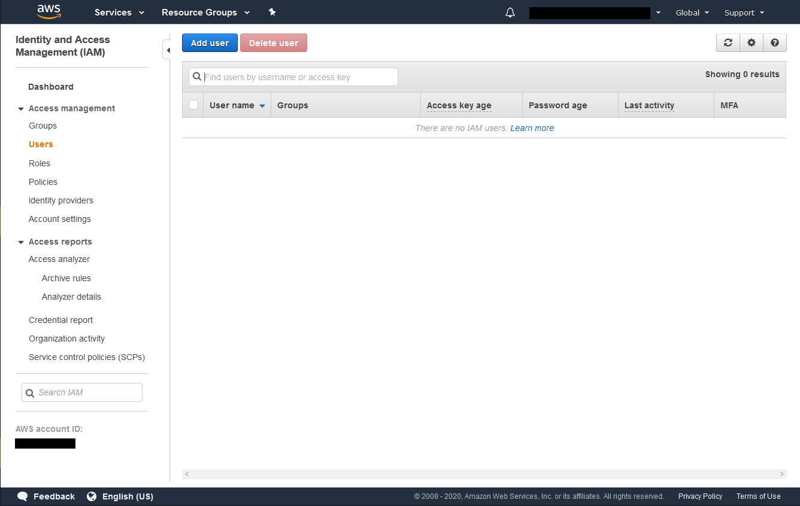
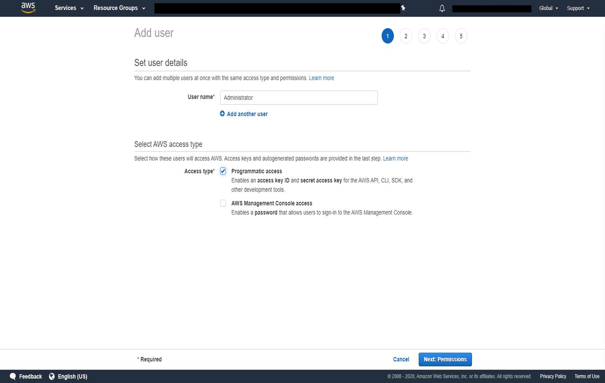
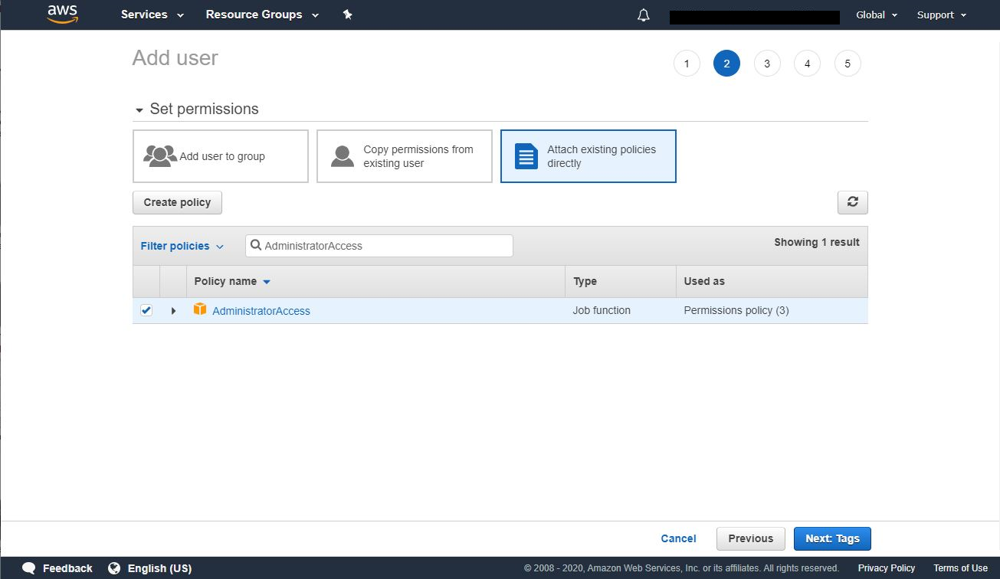
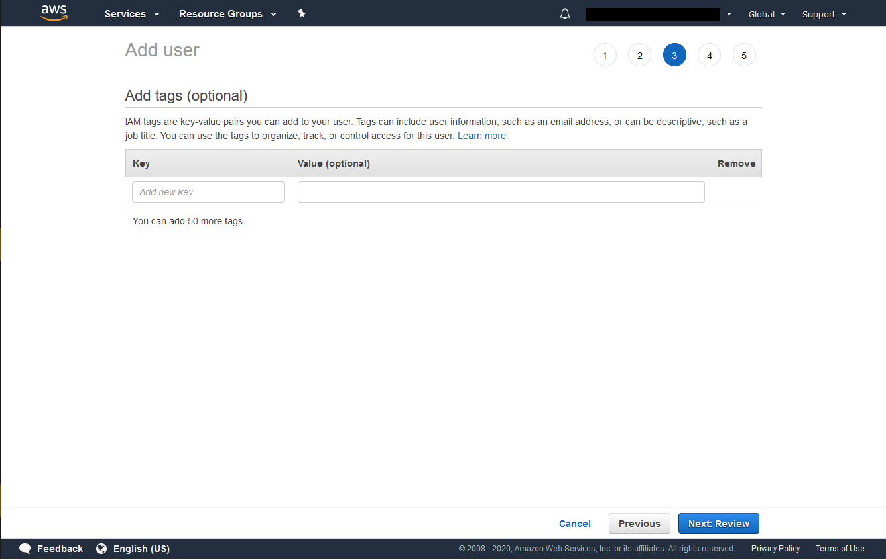
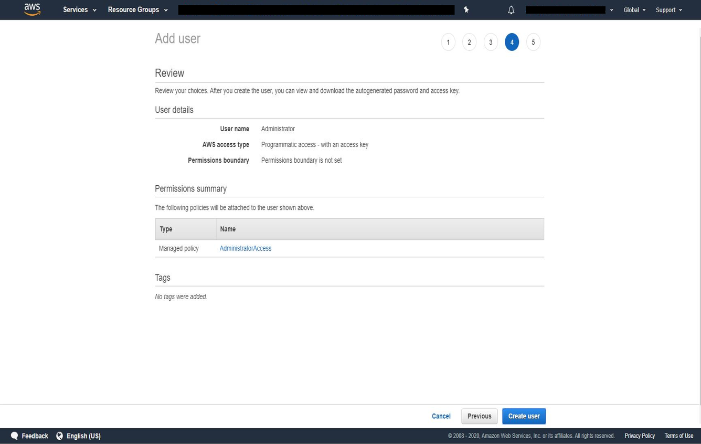

Note
While AWS Portal can enable cloud rendering in Deadline 10, AWS Deadline Cloud is a newer offering that has been built specifically for the cloud. It is a fully managed service that does not require installation or maintenance of infrastructure (e.g., repository, database, or license server). Worker fleet auto-scaling, asset synching, and licensing are all managed natively within AWS by Deadline Cloud. See here for more information on Deadline Cloud and its capabilities.
Creating an Admin IAM User¶
Note
If you have not already created an AWS account, instructions for creating one can be found here: Creating An AWS Account.
Note
If an Administrator IAM user already exists for your AWS account, you can skip this step and go to the next step (keep the Access credentials for this user handy for the AWS Portal Server installer).
First, log into the AWS Console using the aws account you created.
Click on Services at the top of the AWS Console, and find the IAM section under Security, Identity and Compliance. Select Users
Click on the Add user button at the top. Enter the User Name Administrator (or just Admin) and select the Programmatic Access checkbox. Click on the Next: Permissions button to proceed.
Search for AdministratorAccess in the search box and check it in the list below. Continue by clicking on the Next: Review button.
You can add tags with additional data to the user but they are not required. Click on the Next: Review button to continue.
Verify that it looks correct and click Create user.
Once the user is created you’ll see a confirmation screen. Here you’ll be able to get your Access Key and Secret Key, which you’ll need during AWS Portal Client Installation.
Warning
This is the only time you’ll be able to get your Secret Key, so be sure to note it down, or press the ‘Download .csv’ button to download a file which contains both keys.
Warning
These AWS keys grant unrestricted access to your AWS account. If misplaced, the keys could be used to terminate any AWS infrastructure in your account, or create new infrastructure and incur financial costs. It is important that you keep it stored securely. Please refer AWS Guidelines for standard best practices for management of AWS access keys.

{kind=link}
{kind=link}
{kind=link}
{kind=link}
{kind=link}
{kind=link}